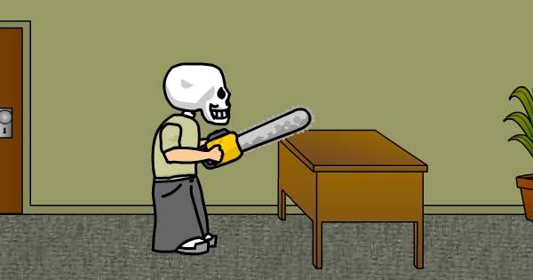
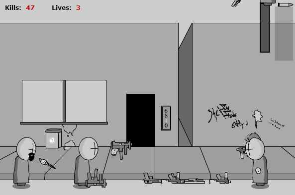

Goal: Interactive Buddy is a freen game that allows you to interact with a real fake friend.
the Skull kid
Goal: You are Skull Kid, an insane office worker that wants to kill everyone at the office. Can you make it to the boss?
Madness Interactive
Desc: An extensive game based on the Madness Combat animations by Krinkels.
